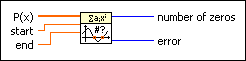

Polynomial Real Zeros Counter VI
Owning Palette: Polynomial VIs
Requires: Full Development System
Calculates the number of zeros of the real polynomial P(x) in a real interval defined by start and end without determining the values of the zeros.

 Add to the block diagram Add to the block diagram |
 Find on the palette Find on the palette |